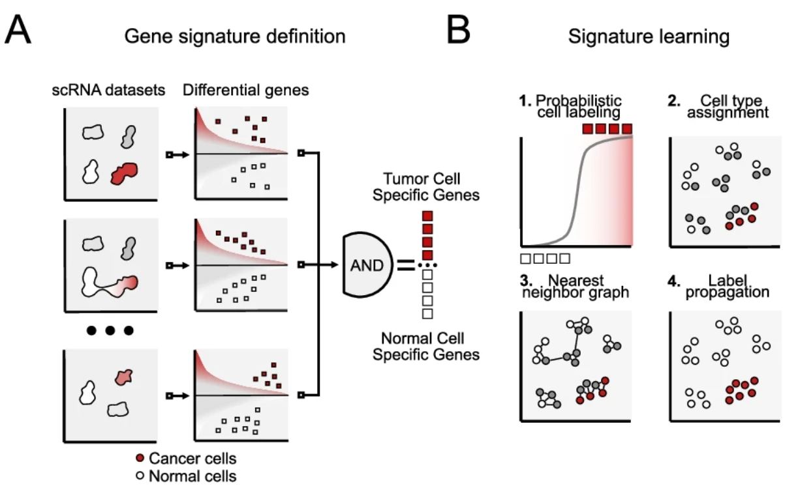
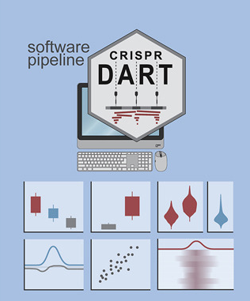
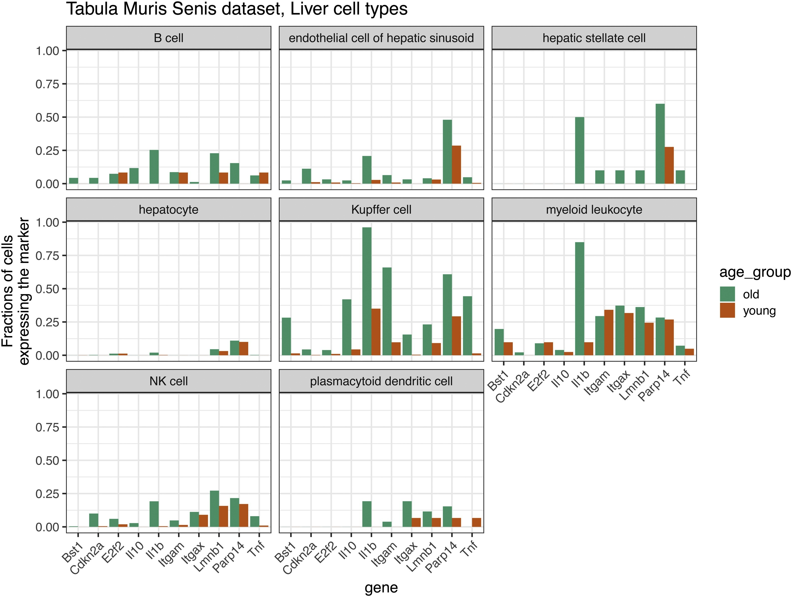
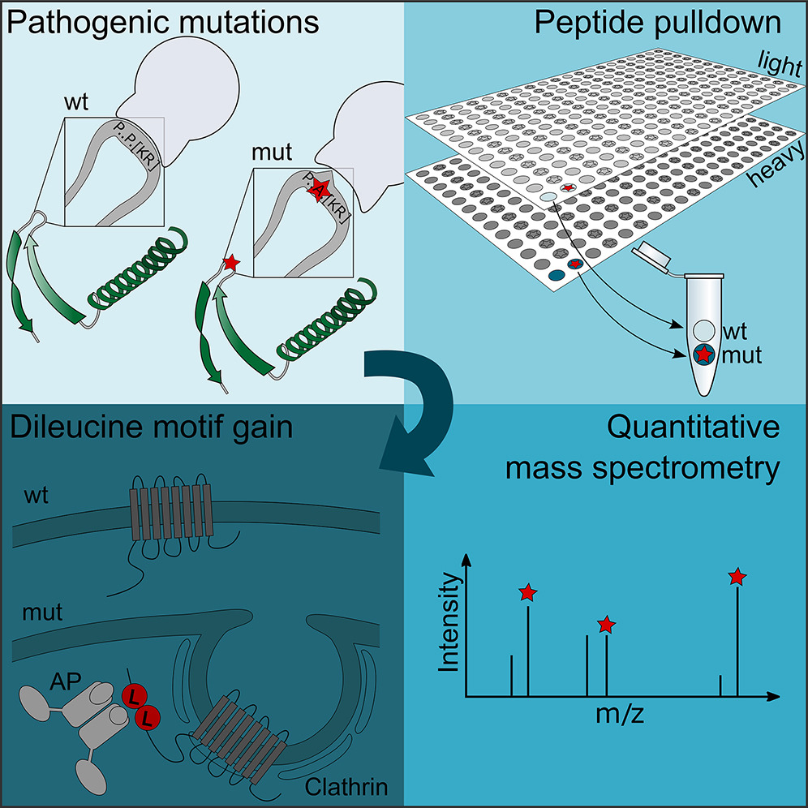
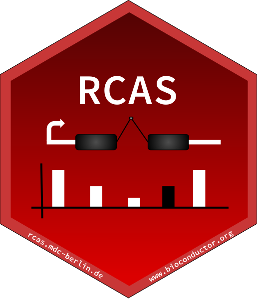

Selected Publications

Identifying tumor cells at the single-cell level using machine learning. Genome Biology, 2022
Ikarus is a machine learning pipeline designed to identify tumor cells from normal cells in single-cell sequencing data. Tested on multiple datasets, it demonstrates high sensitivity and specificity in distinguishing cell types in various experimental contexts.
Read More

Parallel genetics of regulatory sequences using scalable genome editing in vivo. Cell Reports, 2021
The crispr-DART software is used to analyze indel mutations in targeted DNA sequencing, providing insights into the impact of mutations on gene expression and fitness. By applying the software in conjunction with inducible Cas9 and multiplexed guide RNAs, researchers can study regulatory sequences directly in animals, helping to understand their role in health and disease.
Read More

Single-cell analyses of aging, inflammation and senescence. Aging Res. Reviews, 2020
This study compiles and analyzes aging-related single-cell gene expression datasets, highlighting unique insights that are difficult to obtain from bulk data. The findings reveal increased cellular senescence markers, inflammatory processes, and transcriptional heterogeneity with age, suggesting single-cell experiments could provide critical information for interventions targeting aging, inflammation, senescence, and disease.
Read More
PiGx: reproducible genomics analysis pipelines with GNU Guix. GigaScience, 2018
This study introduces a principled approach for building reproducible analysis pipelines and managing their dependencies with GNU Guix, presenting PiGx as a case study. PiGx is a set of highly reproducible pipelines for analyzing various types of sequencing data, generating publication-ready reports and figures, designed for users with command-line experience, potentially benefiting laboratory workers and bioinformaticians alike.
Read More

Mutations in Disordered Regions Can Cause Disease by Creating Dileucine Motifs. Cell, 2018
The study investigates the impact of mutations in intrinsically disordered regions (IDRs) of proteins on protein-protein interactions, finding that mutations in three transmembrane proteins lead to increased clathrin binding and create dileucine motifs. The research reveals that several mutations in disordered regions cause "dileucineopathies," with gained dileucine motifs being significantly overrepresented in structurally disordered cytosolic domains of transmembrane proteins.
Read More

RCAS: an RNA centric annotation system for transcriptome-wide regions of interest. Nucleic Acids Research, 2017
RCAS, an R package, is designed to simplify the creation of gene-centric annotations and analysis for genomic regions of interest obtained from various RNA-based omics technologies. With a modular design, flexible usage, and convenient integration options, RCAS can reproduce published findings, generate novel knowledge, and provide contextual knowledge necessary for understanding the functional aspects of biological events involving RNAs.
Read More